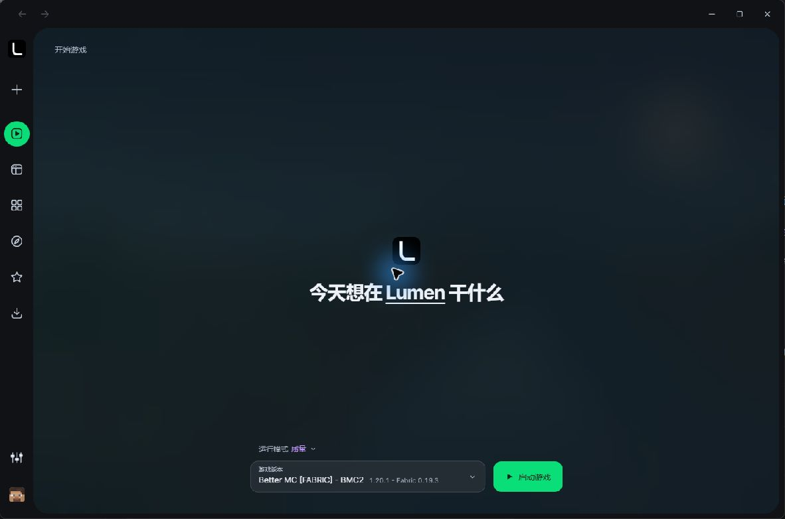
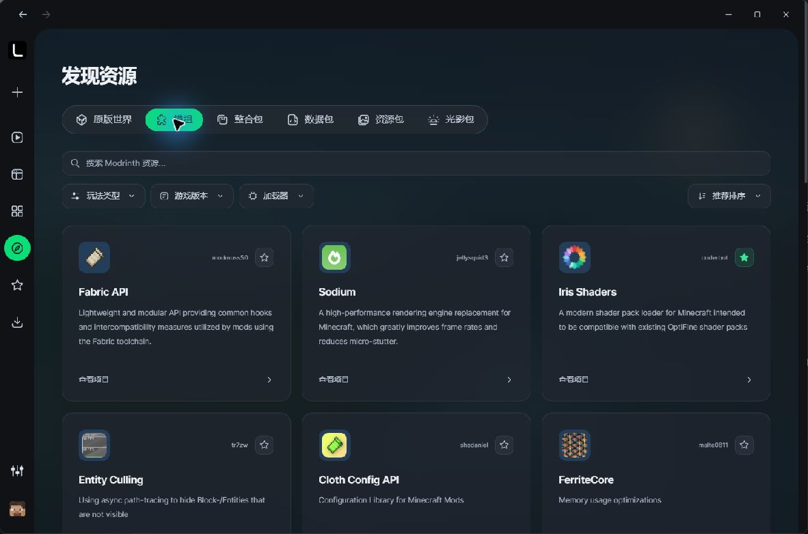

Minecraft, simply managed.
A lightweight Minecraft Java Edition launcher for Windows. Bring your instances, resources, and game logs together in a focused desktop experience.
Windows 10 / 11 x64 | Built with Rust and Tauri 2

Less setup. More clarity.
Separate game environments, visible installation states, and controls for the steps that matter.
Independent instances
Keep mods, saves, and settings separate for each instance.
Resource discovery
Explore public Modrinth projects with game-version and loader filters.
Modpack import
Import supported .mrpack files and install their declared game and loader versions.
Download control
Pause, resume, retry, or cancel. Verify content before committing files, and clean up task-owned caches safely.
Java selection
Detect compatible runtimes, select an installed Java, or confirm a managed runtime installation.
Real game logs
Read the actual output of a launched instance when something needs investigation.
Find what belongs in your game.
Resource discovery in the current Lumen desktop build.

A preview, with clear boundaries.
Lumen is in small-scale private testing. There is no public installer release yet.
Available in the current preview
- Offline-account launching and native game installation
- Public Modrinth discovery and supported modpack import
- Java selection, download management, and real logs
- Light and dark desktop themes
In progress
- CurseForge API access and integration
- Microsoft account authentication
- Signed automatic updates and additional workspace tools
Current native installation scope: Minecraft 1.20.1 and newer releases, with supported Fabric, Quilt, Forge, and NeoForge profiles. Compatibility depends on the particular pack and version.
Complete means checked.
Some packs list additional resources outside their main index. Lumen checks supported author-provided lists and marks missing external files explicitly, with official links and a local batch-import workflow.
File checks and launch preparation do not replace gameplay compatibility testing for every pack.
Built with respect for creators
We intend to credit authors, link to official project pages, and respect platform policies and distribution settings.
This repository contains the project overview, webpage, and screenshots. It does not host Minecraft or resource binaries. The launcher's application source code is not published here.
Share preview feedback